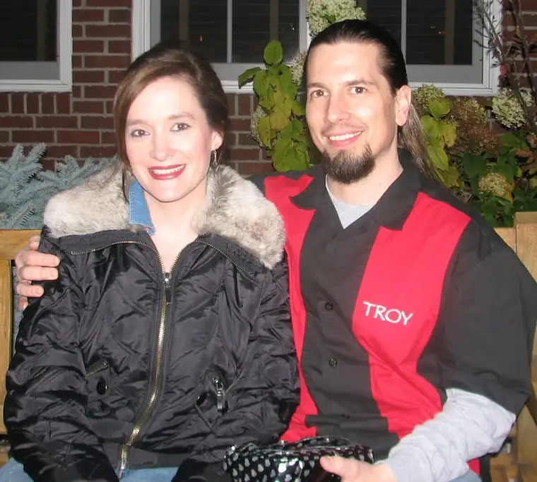
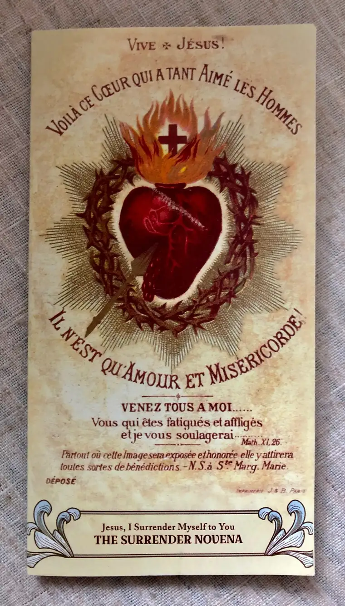
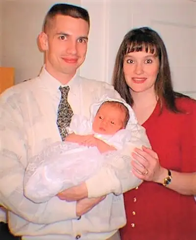
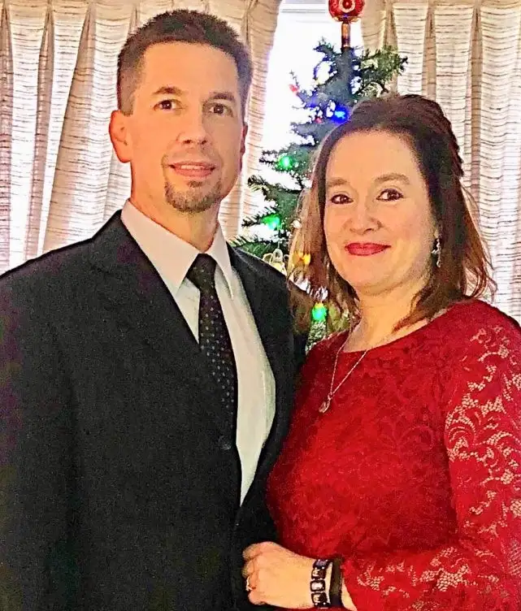

Later today, on this Valentine’s Day 2019, my husband and I will enjoy lunch together, then head to an appointment to discuss a possible second open-heart surgery for him in the course of just over a year. His first and very unexpected procedure, preceded by virtually no symptoms (the need for which was discovered after a routine walk-in doctor visit to deal with a nagging fever) happened on Dec. 6, 2017.
Given today’s appointment, you might say we’re taking “Heart Day” literally this year, for, rather than a day of romantic gestures, we will be getting to the heart of things regarding my beloved’s health, and the recent discovery that something is still very wrong with his heart. Not only another valve leak, but a new development — hemolytic anemia — which complicates things further.
Back when we said “I do,” and promised the gift of ourselves to each other “in sickness and in health,” we couldn’t have imagined this, but here we are, and despite great consternation over the state of things, we are being held as steady as can be expected through our faith. The novena we’re doing together, the surrender novena, literally has the picture of a heart (the Sacred Heart of Jesus, which burns with love for all of humanity) on the cover.

And small, recently-acquired statues of the Sacred Heart of Jesus , along with the Immaculate Heart of Mary, now watch over us as we sleep.

This all brings me to the title I chose for this post: “What’s love got to do with it?” — words from Tina Turner’s famous 1984 song of the same title. Hold that thought again for just a moment or two more…
Valentine’s Day comes with baggage, does it not? To many, it’s a commercialized annoyance. To others, a reminder of the love they don’t feel. I have felt those things at different times myself, but this year, it’s all coming into perspective for me.
“What’s love but a second-hand emotion?” Tina asked in 1984. All these years later, I’d agree that love comes second, after “decision.” Long after the butterflies flutter away, we are left with real life. And speaking from real-life, personal experience, we are left with this: a life and death moment, which has caused much reflection, and so much appreciation for our marriage, along with the realization that, despite so many rough moments and uncertainties, we’ve been held together, by little more than the grace of God.
Further introspection on the topic comes from a friend, who shared some thoughts on a private Facebook page we’re both connected with to encourage couples struggling in their marriages — and I will assure you, we face some extraordinary stories of heartache on that page. One of the members who is struggling this year asked others in hurting marriages advice on how to embrace Valentine’s Day given these sufferings. My friend’s wisdom, from her own great losses in love and marriage, really spoke to me, and I’m sure others, and I wanted to share them with you today.
In the words of my friend, a fellow mother of five, who was abandoned by her husband while pregnant with their fifth child:
“Valentine’s Day 2009 my husband and I renewed our vows with other at Mass on one of my happiest days ever. That Mother’s Day he left out of the blue. Valentine’s Day 2012, our divorce was finalized, stamped with the date forever.
“Yes, I understand struggling on special days. I have a few crazy ‘coincidences’ like this. I don’t understand why God allows these things, but I do know Valentine’s Day is not about the Hallmark, chocolate candy, over-priced bouquet fluff we think it is. Valentine’s Day is about choosing to love another despite his or her ‘worthiness.’ It is about choosing to love God above all and to selflessly serve Him even when it’s hard, even when it means loving without evidence of being loved in return. It’s about a Cross rather than a heart and a commitment rather than a condition, a decision rather than an emotion, and a covenant rather than a contract. It’s about knowing that even in divorce your call to Love is unchanged while the burden of doing so is not easier. It’s about choosing the same attitude and sacrifices that many of our Saints did and hoping to one day also be made a Saint. It’s not about one day. It’s not even about your spouse’s life. It’s about one life: yours.
“You make it through by reading James I and counting Valentine’s Day among your Joys because of what it produces in who you are and what you become. You make it by looking others in the eye and hearing their stories, not so you can be better loved but so you can love others better. You find little ways to make Joy happen in your life with whomever is willing to receive it. Bake cookies for a friend. Visit a lonely shut in. Leave a trail of hearts with funny, inspirational messages for your kids. Do a craft at the local library and bring it to a shelter. Give your things away. Spend time in Adoration with the only one who Loves perfectly. And don’t forget to love yourself, too. You can’t expect anyone to treat you better than you treat yourself. Know you are Loved and act like it. Hold your head high. Pamper yourself. Take a walk. Take a trip to a museum. Take a bubble bath with scented oils and pretty candles. Read uninterrupted for 30 minutes (or at least five!). Dress in something that makes you feel beautiful and don’t wait for or get discouraged by compliments or put downs. Do it for you and to Thank God for all He has given you as opposed to all you want Him to give you. Remember to date the Lord first and foremost. He is your one true Love and in Him lies solace. Most of all smile. Simply smiling goes a long way toward changing how others see and react to you and how you see and feel about yourself. Sometimes the answer really is that simple.” (by http://SingleMomSmiling.com)
Reading it again, I can’t help but be convinced her response was inspired by the Holy Spirit, not just for the benefit of the people in our group, but for many. My friend’s words, and what we’re facing right now, help put this day in focused perspective, confronting again the question: “What’s love got to do with it?”
The answer? Well, everything really, but first we need to understand — really grasp — what love is. As Flannery O’Connor once said, Christianity isn’t an electric blanket to keep us cozy; it is “the cross.”
It may be hard to hear, but it also can be the most freeing thing you will ever learn in this life.

God bless you, and Happy Valentine’s Day!

Q4U: What does Valentine’s Day mean to you?